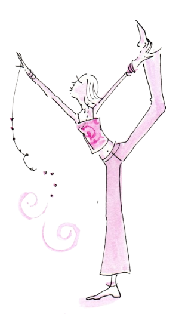
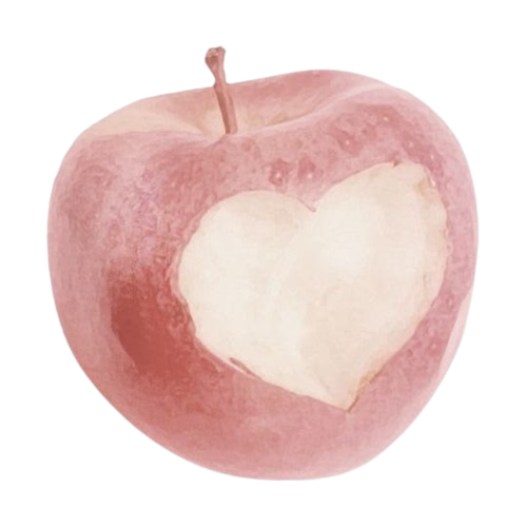
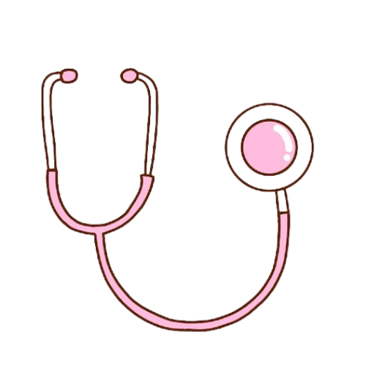

Como se prevenir?

Pratique atividade física
Manter o corpo em movimento reduz significativamente o risco de desenvolver diversas doenças, incluindo o câncer de mama. Tente praticar pelo menos 150 minutos de exercícios moderados por semana.

Alimente-se bem
Uma alimentação equilibrada, rica em frutas, legumes, verduras e cereais integrais, e com menor consumo de alimentos ultraprocessados e gordurosos, auxilia na manutenção do peso saudável.

Realize exames regularmente
O acompanhamento médico periódico e a realização da mamografia, especialmente para mulheres entre 50 e 69 anos, são indispensáveis para o diagnóstico precoce da doença.